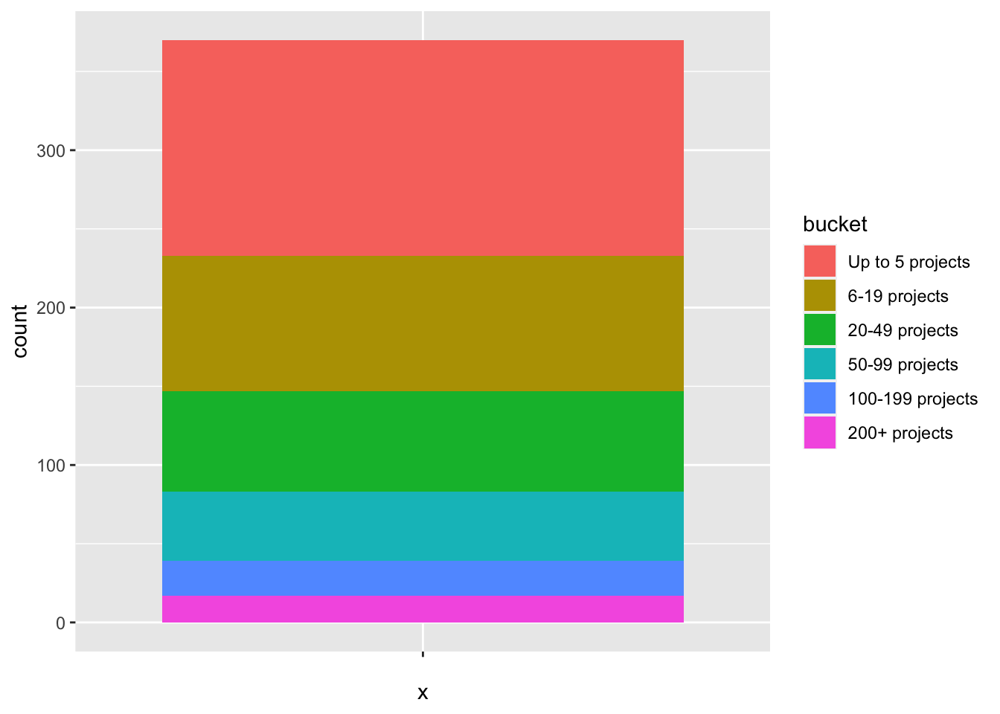
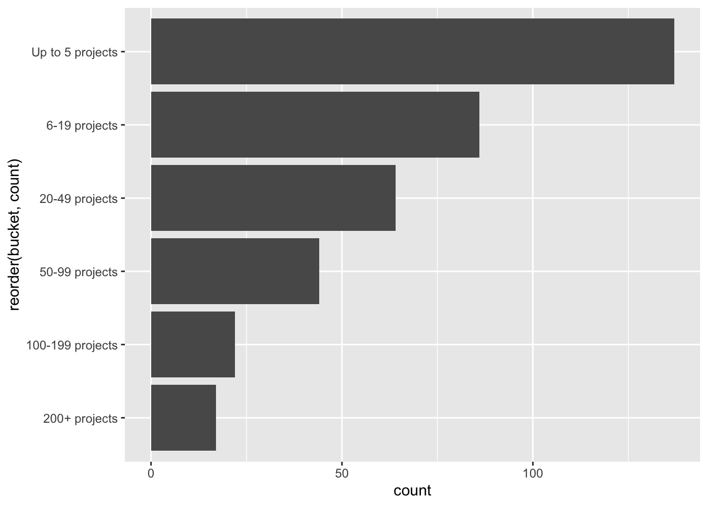

This week’s data is from the Fiscal Sponsor Directory. Never heard of them! There are a few prompts that sparked some ideas about what I would do this week - particularly, “has the data changed”?
Looking at the original March 2023 post, there was a pie chart that was worth reproducing. Instead of a pie chart, I tried a stacked bar chart first. This required mutate() to create a new column that would “bucket” the n_sponsored column using the cut() function. The labels and breaks parameters of cut are based on the categories that are annotated on the pie chart in the March 2023 post. I renamed category “16-19 projects” to “6-19” projects because I think that was a typo on their part.
pie_chart_categories <-c("Up to 5 projects", "6-19 projects", "20-49 projects", "50-99 projects", "100-199 projects", "200+ projects")df_buckets <- df %>%replace_na(list(n_sponsored =0)) %>%mutate(bucket =cut( n_sponsored, breaks =c(0, 6, 20, 50, 100, 200, Inf),labels = pie_chart_categories,right =FALSE# open on the right, closed on the left ) ) %>%select(n_sponsored, bucket)df_buckets
# A tibble: 370 × 2
n_sponsored bucket
<dbl> <fct>
1 2 Up to 5 projects
2 10 6-19 projects
3 20 20-49 projects
4 6 6-19 projects
5 2 Up to 5 projects
6 1 Up to 5 projects
7 0 Up to 5 projects
8 7 6-19 projects
9 1 Up to 5 projects
10 15 6-19 projects
# ℹ 360 more rows
The geom_bar() function should handle this data as is so there was no further cleaning required. geom_bar() can be used to create a pie chart by adding coord_polar() to it but I wanted to see if a stacked bar chart would be a worthwhile alternative to a pie chart, so I’m going to leave out coord_polar().
df_buckets %>%ggplot(aes(x ="", fill = bucket)) +geom_bar(position ="stack")

I don’t believe this chart is any more intuitive or helpful than a pie chart, so we’re going back to the old reliable classic bar chart. I’m going to use geom_col() because it has seemed more natural to use in the past. This requires a bit more data transforming to get the value counts of each bucket, as well as the bucket proportion in case that comes in handy later.
Now we can use this with geom_col(). I often find a horizontal column chart is easier to interpret, so we’ll plot the buckets on the y-axis and the counts on the x-axis.
df_buckets_summary %>%ggplot(aes(y =reorder(bucket, count), x = count)) +geom_col()

This chart is just so much more elite than the pie chart, or even my sad attempt at a stacked bar chart. Why bother with those! Let’s clean this bad boy up now.
One new thing I tried with this chart was to change the font family in the text parameter of theme(). This is trickier to do in Windows but this blog post from Will Chase gave me some clues. Unfortunately, the loadfonts() function here takes some time. Not sure how to get around this yet but whatever, I want to see what Tahoma looks like on this chart. There is a note to add loadfonts() to your .Rprofile so that it automatically runs every time a new R session starts but based on how long this takes, I’m not sure I want that yet. Perhaps a note to self.